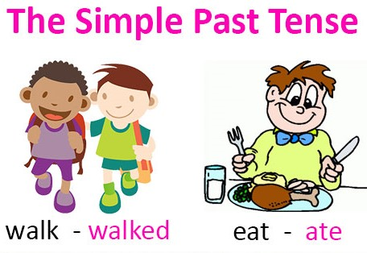

<!-- We don't need full layout here, because this page will be parsed with Ajax-->
<!-- Top Navbar-->

<div class="pages">
  <!-- Page, data-page contains page name-->
  <div data-page="about" class="page">
    <!-- Scrollable page content-->
    <div class="page-content">
      <div class="navbar">
  <div class="navbar-inner">
    <div class="left"><a href="#" class="back link"> <i class="icon icon-back"></i><span>Back</span></a></div>
    <div class="center sliding">Past Simple</div>
    <div class="right">
      <!-- Right link contains only icon - additional "icon-only" class--><a href="#" class="link icon-only open-panel"> <i class="icon icon-bars"></i></a>
    </div>
  </div>
</div>
      <div class="content-block presentcon">
    
    <div class="row no-gutter">
        <div class="col-100">



        </div>
    </div>
We use the past simple to talk about actions and states which we see as completed in the past.

We can use it to talk about a specific point in time.
<h2>Examples</h2>

<ul>
<li>She came back last Friday.</li>
<li>I saw her in the street.</li>
<li>They didn't agree to the deal.</li>

</ul>

      </div>
    </div>
  </div>
</div>